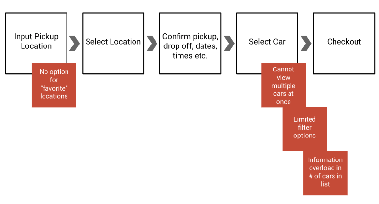
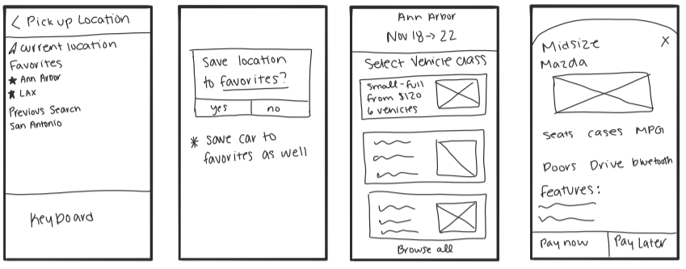
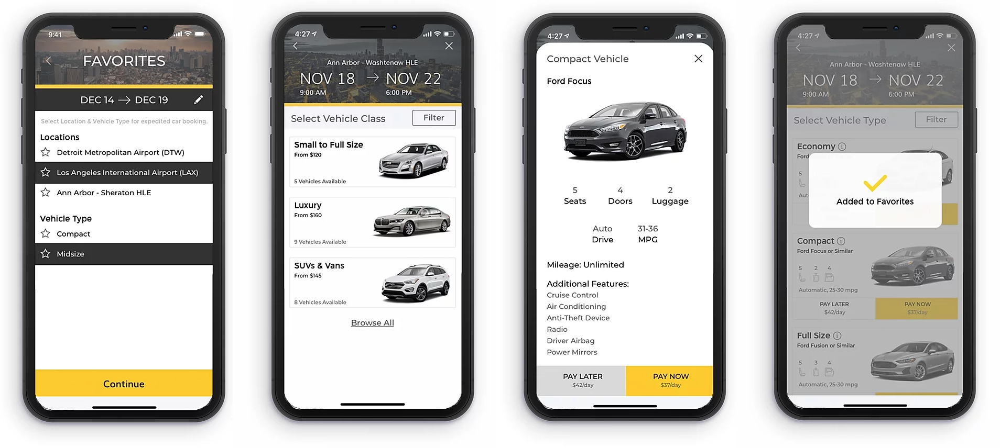

IBM Design Challenge
November 2019 (4 Days)
During my interview process with IBM, I was given a challenge to "design a better way for a mid-career professional who occasionally travels for work to find just the right vehicle when using the Hertz mobile app."

Approach
- Understand Considerations & Assumptions
- Define Problem Statement
- Conduct User Research
- Develop Primary Persona
- Perform Competitive & Task Analyses
- Design Wireframes
- Product High Fidelity Screens and Prototype
Considerations & Assumptions
Considerations
- This particular user type values having lots of information and control over the kind of car the user ultimately chooses to reserve
- Evidence shows that all user types "just want to browse and understand existing options"
Assumptions
- User has experience with car rental apps
- User desires more efficient checkout method
Problem Statement
Using the information and considerations provided by IBM, I formulated an in-depth problem statement: Mid-career professionals who occasionally travel need an easier and more efficient way to find the right car for their needs when using the Hertz mobile app, but the app still needs to accommodate other users who prefer to browse.
User Research
- Mid-career professional = 10-15 years in the workforce
- Travels ~once per month
Takeaways from 4 interviews with mid-career professionals:
- “I want to be able to see the details of the car before I commit to driving for hours on end”
- “I hate going through the whole selection process when I just want the exact same car as last time”
- “I prefer National because of the menu options but that app doesn’t give me the information about upcoming trips if I’m currently on a trip”
- “I get overwhelmed by the number of similar cars listed and it makes it difficult to choose the right car for me”
Primary Persona
James Walker
Age: 40, Profession: Technology Consultant at Accenture
I do not frequently travel for work but when I need to rent a car I want to have as much information about the vehicle readily available. I typically get frustrated when using car rental apps and wish there were a more efficient way to compare cars and then save my preferences for next time.
Task Analysis
In order to assess the positive and negative aspects of the current Hertz application, I conducted a task analysis with a mid-career professional. His steps are outlined below with red boxes to represent the pain points found throughout the process.
Wireframes
Following the research phase of this challenge, I began designing wireframes of the main screens. I kept in mind the problem statement, the results from the interviews and the task analysis to create solutions within the updated design while ensuring that the Hertz branding was not altered.
Prototype
I turned my wireframes into a high-fidelity working prototype following the Hertz branding guidelines. In order to meet the needs of the chosen persona and implement the feedback received from the research, I redesigned the app to include the following changes: the cars are categorized to limit information overload for the user when selecting a car, the browse feature caters to the needs of the users who simply want to view all of their options, multiple cars are visible at a time to allow the user to compare options side by side, and the implementation of favorites allows users to save locations and cars for an expedited checkout.
Follow the links below for videos of the two main flows of the app:
Main Flow
Favorites Flow